A témakör célja, hogy megismerkedjünk a Node.js-szel. Néhány alapvető fogalommal tisztában legyünk. És felfedezzünk néhány olyan internetes felületet, amelyek a későbbiekben nagyon hasznosak lehetnek a számunkra.
- Mivel a böngésző alapértelmezett szkriptnyelve a JavaScript, ami a Google Chrome böngésző esetén a V8 motort használja, ami köré a Node.js is épül. Így logikus választásnak tűnik a Node.js, hogy a szerveroldalon használt szkriptnyelv is JavaScript alapú legyen.
- Számos online szervezet (pl. Linkedln, Netflix, PayPal stb.) használja.
- Nagy mennyiségű információ érhető el vele kapcsolatban az interneten. Nagy a támogatói közössége.
Menjünk vissza egy kicsit az időben:
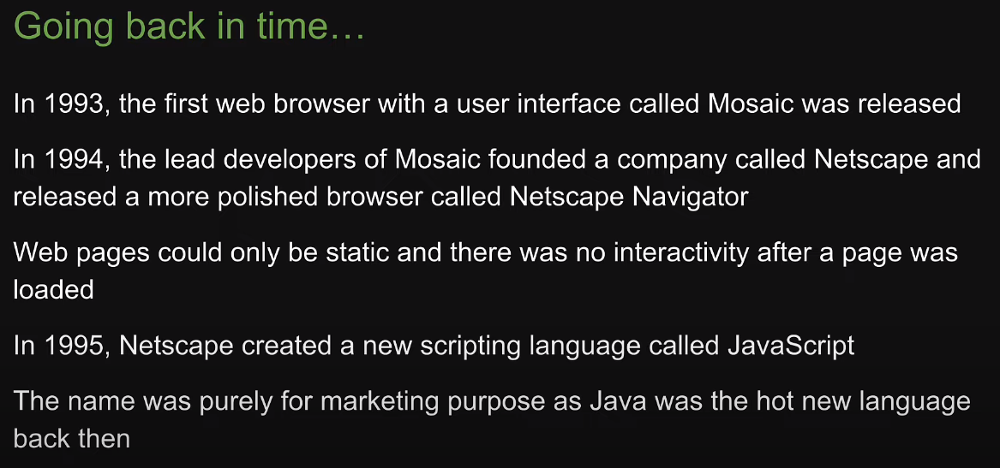
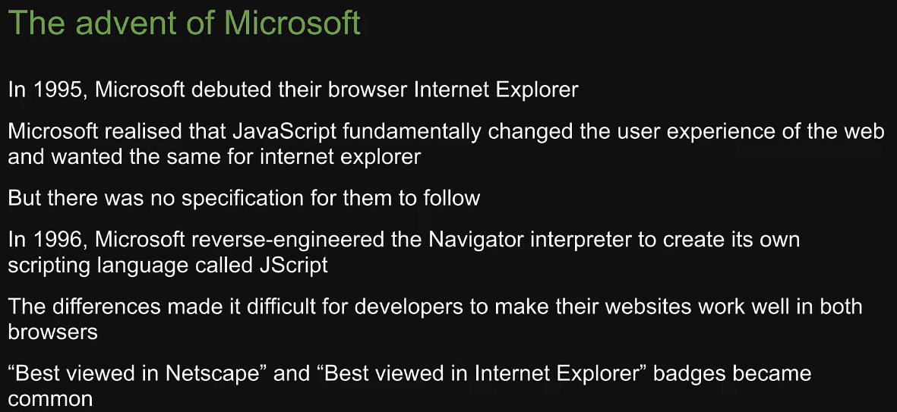
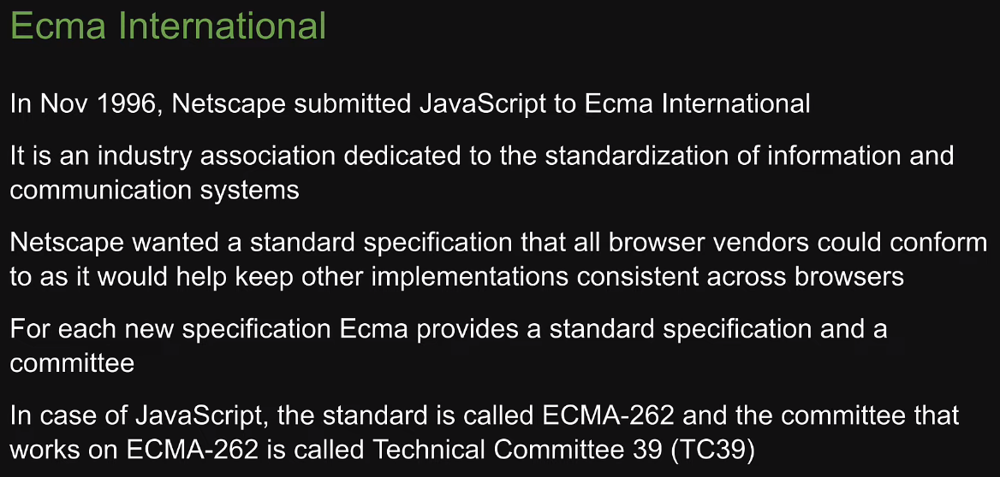
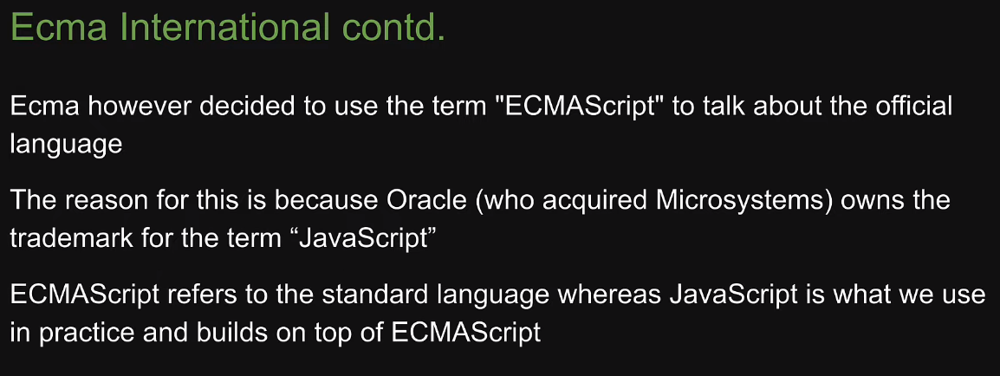
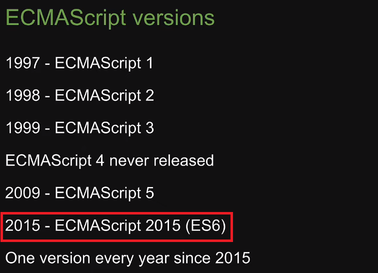
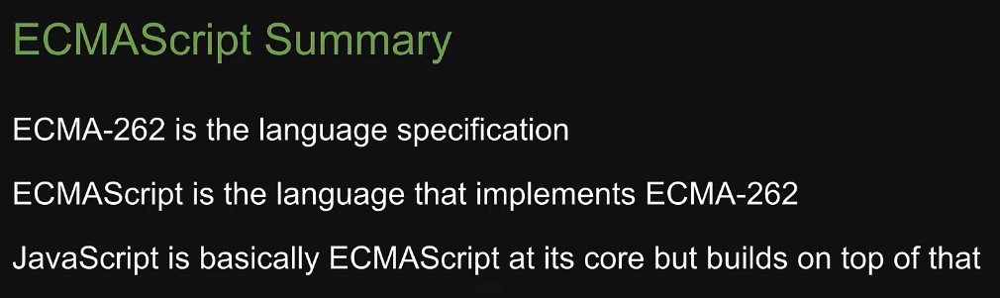
Néhány gondolat a JavaScript motorokról, kiemelten a V8 motorról:
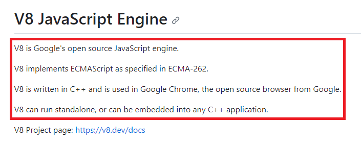
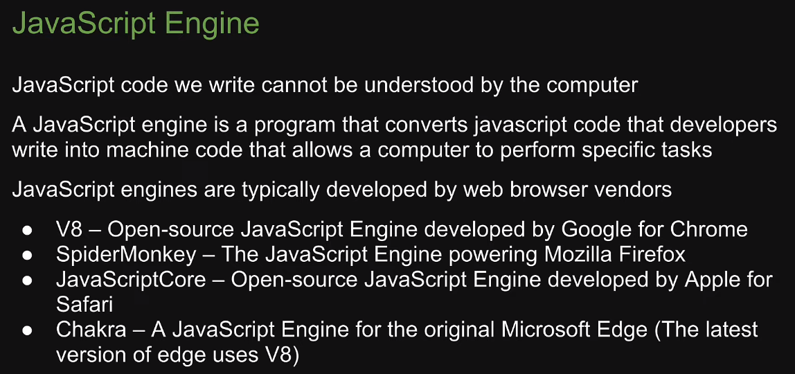
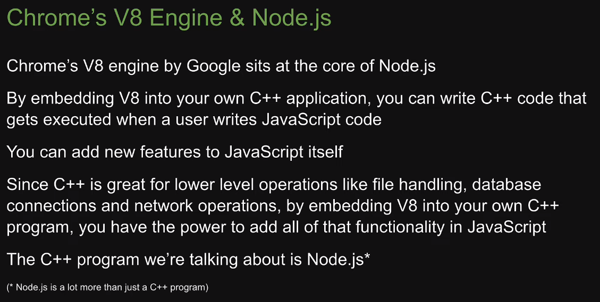
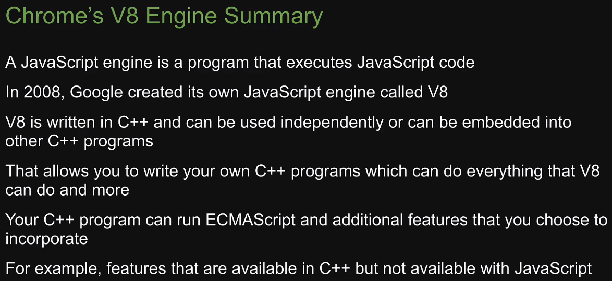
Ennyi bevezetés után nézzük a futtatókörnyezet-et:
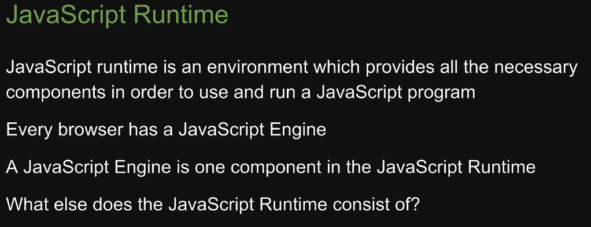
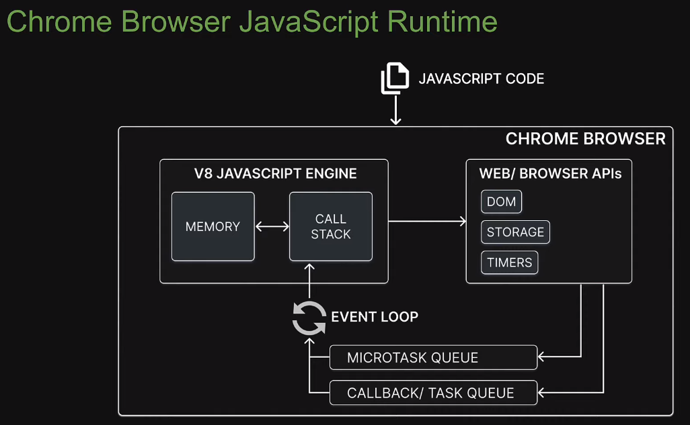
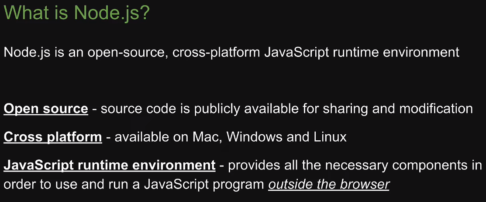
A Node.js egy nyílt forráskódú (open-source), platformfüggetlen (cross-platform) JavaScript futtatókörnyezet (runtime environment). Tehát nem egy új programozási nyelv!
clear_all nyílt forráskód: bárki szabadon másolhatja és szerkesztheti C++ nyelven a forráskódot
clear_all platformfüggetlen: elérhető Mac-en, Linux-on és Windows-on
A hivatalos oldala: Node.js
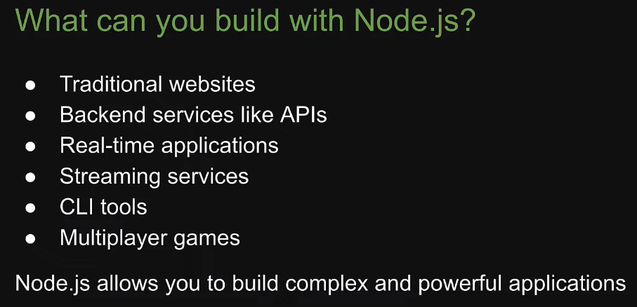
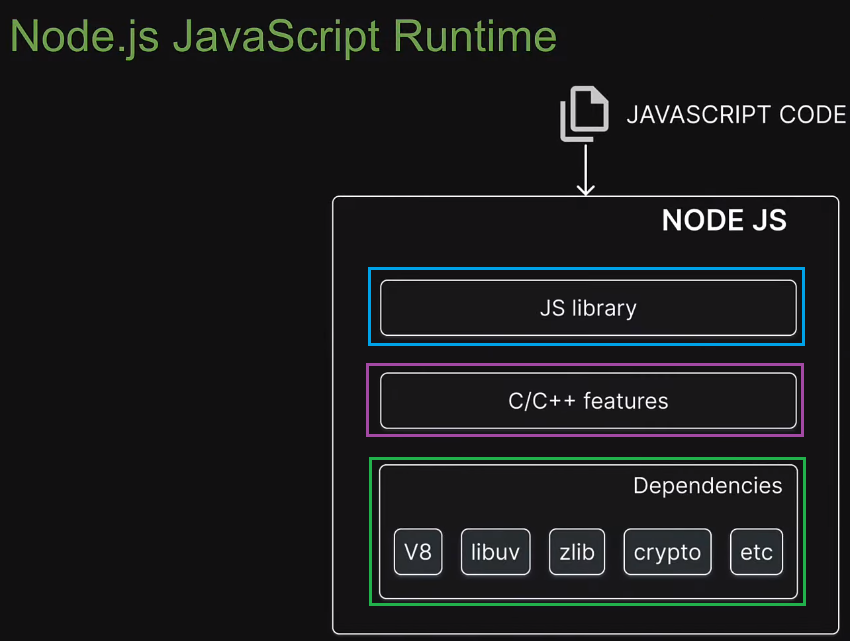
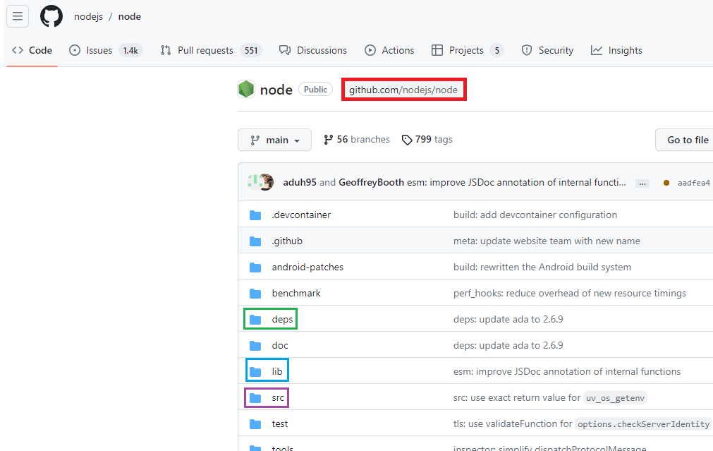
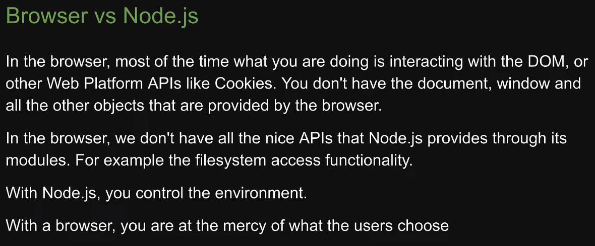